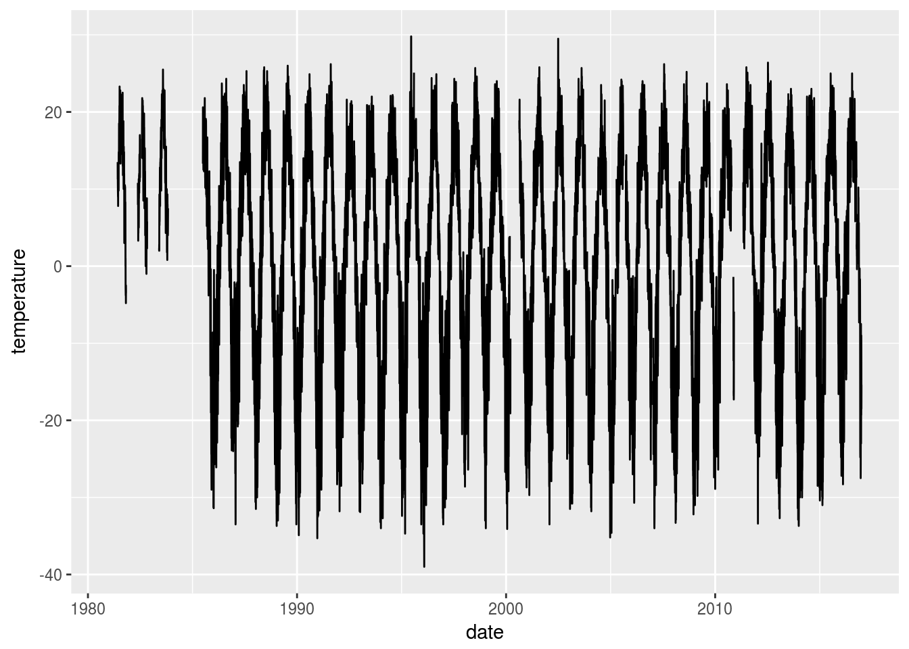

Tidying weather data
Introduction
Weather data often comes in an untidy format that is suitable for looking at, but not so suitable for doing any kind of analysis with. Let’s have a look at the kind of thing I mean. But before we do that, we need a package or two:
library(tidyverse)## ── Attaching packages ─────────────────────────────────────────────────────────────────────────── tidyverse 1.2.1 ──## ✔ ggplot2 2.2.1 ✔ purrr 0.2.4
## ✔ tibble 1.3.4 ✔ dplyr 0.7.4
## ✔ tidyr 0.7.2 ✔ stringr 1.2.0
## ✔ readr 1.1.1 ✔ forcats 0.2.0## ── Conflicts ────────────────────────────────────────────────────────────────────────────── tidyverse_conflicts() ──
## ✖ dplyr::filter() masks stats::filter()
## ✖ dplyr::lag() masks stats::lag()library(lubridate)##
## Attaching package: 'lubridate'## The following object is masked from 'package:base':
##
## dateOK, our data, daily mean temperatures from some weather station going back to 1905:
weather=read_csv("BR 1905-2016.csv")## Parsed with column specification:
## cols(
## .default = col_double(),
## year = col_integer(),
## month = col_integer()
## )## See spec(...) for full column specifications.weather## # A tibble: 1,344 x 33
## year month d1 d2 d3 d4 d5 d6 d7
## <int> <int> <dbl> <dbl> <dbl> <dbl> <dbl> <dbl> <dbl>
## 1 1905 1 -17.6 -24.2 -20.1 -13.9 -16.8 -13.2 -22.9
## 2 1905 2 -31.5 -32.6 -28.8 -26.7 -26.1 -19.6 -13.7
## 3 1905 3 -1.3 0.6 -8.8 -6.9 -12.5 -8.7 -11.0
## 4 1905 4 2.6 5.1 2.7 -0.3 -3.0 0.6 4.7
## 5 1905 5 2.3 5.9 2.5 2.6 1.1 0.8 2.6
## 6 1905 6 14.8 15.8 16.9 13.6 14.4 16.0 17.7
## 7 1905 7 -9999.9 -9999.9 19.4 21.4 18.4 18.0 14.8
## 8 1905 8 22.6 21.2 22.6 19.5 21.8 15.7 16.9
## 9 1905 9 15.9 16.7 17.8 17.5 16.7 14.8 14.0
## 10 1905 10 -9999.9 -9999.9 -9999.9 -9999.9 -9999.9 -9999.9 -9999.9
## # ... with 1,334 more rows, and 24 more variables: d8 <dbl>, d9 <dbl>,
## # d10 <dbl>, d11 <dbl>, d12 <dbl>, d13 <dbl>, d14 <dbl>, d15 <dbl>,
## # d16 <dbl>, d17 <dbl>, d18 <dbl>, d19 <dbl>, d20 <dbl>, d21 <dbl>,
## # d22 <dbl>, d23 <dbl>, d24 <dbl>, d25 <dbl>, d26 <dbl>, d27 <dbl>,
## # d28 <dbl>, d29 <dbl>, d30 <dbl>, d31 <dbl>This says, for example, that on January 2nd, 1905, the mean temperature was -24.2. (Look in the d2 column of the first row.) This is convenient if you want to look at the data: for example, if you have this in a spreadsheet, you can look at the whole of 1905 in a rectangle with 12 rows and 31 columns. But it is not very convenient for any actual analysis, because the temperatures are scattered over 31 columns. For example, what if you wanted to check the temperatures for time trends?
Tidying the data
What we want is to get all those temperatures into one column, labelled, say, temperature, with another column saying which day they were for (the 5th of the month is currently in column d5). This is one of the most frequent kinds of data rearrangement, and it’s a basic “verb” in the tidyr world, gather. The way I remember it is: what makes the columns different, what makes them the same, and which columns to gather.
Here, what makes the columns different is that they’re different days, what makes them the same is that they’re all temperatures, and the columns to gather are d1 through d31:
weather %>% gather(day,temperature,d1:d31)## # A tibble: 41,664 x 4
## year month day temperature
## <int> <int> <chr> <dbl>
## 1 1905 1 d1 -17.6
## 2 1905 2 d1 -31.5
## 3 1905 3 d1 -1.3
## 4 1905 4 d1 2.6
## 5 1905 5 d1 2.3
## 6 1905 6 d1 14.8
## 7 1905 7 d1 -9999.9
## 8 1905 8 d1 22.6
## 9 1905 9 d1 15.9
## 10 1905 10 d1 -9999.9
## # ... with 41,654 more rowsSo now we have all the temperatures in one column. It would also be nice to turn the year, month and day into an actual date. This happens in three steps: first, we pull the number out of day, which can be done with parse_number (saving the result back into day); second, we glue the year, month and day together (which gives us a piece of text that looks like a date but isn’t one yet); third, we make an actual date out of it. I’ll show the process one step at a time:
weather %>% gather(day,temperature,d1:d31) %>%
mutate(day=parse_number(day)) ## # A tibble: 41,664 x 4
## year month day temperature
## <int> <int> <dbl> <dbl>
## 1 1905 1 1 -17.6
## 2 1905 2 1 -31.5
## 3 1905 3 1 -1.3
## 4 1905 4 1 2.6
## 5 1905 5 1 2.3
## 6 1905 6 1 14.8
## 7 1905 7 1 -9999.9
## 8 1905 8 1 22.6
## 9 1905 9 1 15.9
## 10 1905 10 1 -9999.9
## # ... with 41,654 more rowsNext, step two:
weather %>% gather(day,temperature,d1:d31) %>%
mutate(day=parse_number(day)) %>%
unite(text_date,year,month,day)## # A tibble: 41,664 x 2
## text_date temperature
## * <chr> <dbl>
## 1 1905_1_1 -17.6
## 2 1905_2_1 -31.5
## 3 1905_3_1 -1.3
## 4 1905_4_1 2.6
## 5 1905_5_1 2.3
## 6 1905_6_1 14.8
## 7 1905_7_1 -9999.9
## 8 1905_8_1 22.6
## 9 1905_9_1 15.9
## 10 1905_10_1 -9999.9
## # ... with 41,654 more rowsThis glues the year, month and now-numeric day together and gets rid of the year, month and day that we no longer need.
Step three:
weather %>% gather(day,temperature,d1:d31) %>%
mutate(day=parse_number(day)) %>%
unite(text_date,year,month,day) %>%
mutate(date=ymd(text_date)) -> weather2
weather2## # A tibble: 41,664 x 3
## text_date temperature date
## <chr> <dbl> <date>
## 1 1905_1_1 -17.6 1905-01-01
## 2 1905_2_1 -31.5 1905-02-01
## 3 1905_3_1 -1.3 1905-03-01
## 4 1905_4_1 2.6 1905-04-01
## 5 1905_5_1 2.3 1905-05-01
## 6 1905_6_1 14.8 1905-06-01
## 7 1905_7_1 -9999.9 1905-07-01
## 8 1905_8_1 22.6 1905-08-01
## 9 1905_9_1 15.9 1905-09-01
## 10 1905_10_1 -9999.9 1905-10-01
## # ... with 41,654 more rowsI thought as.Date would handle the last step, but it seems to require ymd from lubridate, which turns a piece of text containing a year, a month and a day in that order (in some representation) into an actual date.
I am courting controversy here by using the right-arrow assignment syntax. This means “do all the stuff in the pipeline and save the final result in weather2”. I like this because it follows top to bottom, with the assignment being the very last thing we do. Some people say that the assignment is the most important thing, and we should start with it, to emphasize that we are saving the result, but I find it weird to jump back to the beginning to find out what happens to the final result of the pipeline. A matter of taste.
Further tidying
Some other observations:
- We don’t need
text_dateany more, since it has done its job. - Those temperatures -9999.9 are actually missing.
- The dates are out of order, with all the firsts of the month first, then the seconds, and so on. (This is because
gathergoes all the way down the first column first.)
So let’s implement that:
weather2 %>% select(-text_date) %>%
mutate(temperature=ifelse(temperature<(-5000),NA,temperature)) %>%
arrange(date) -> weather3
weather3## # A tibble: 41,664 x 2
## temperature date
## <dbl> <date>
## 1 -17.6 1905-01-01
## 2 -24.2 1905-01-02
## 3 -20.1 1905-01-03
## 4 -13.9 1905-01-04
## 5 -16.8 1905-01-05
## 6 -13.2 1905-01-06
## 7 -22.9 1905-01-07
## 8 -21.2 1905-01-08
## 9 -29.5 1905-01-09
## 10 -29.5 1905-01-10
## # ... with 41,654 more rowsHow many missing and non-missing temperatures were there?
weather3 %>% count(is.na(temperature))## # A tibble: 2 x 2
## `is.na(temperature)` n
## <lgl> <int>
## 1 FALSE 30884
## 2 TRUE 10780About 10,000 missing ones.
A pretty picture
I can’t really do a blog post without at least one pretty picture. I talked about time trends earlier, so:
weather3 %>%
filter(date>="1981-01-01") %>%
ggplot(aes(x=date,y=temperature))+geom_line()## Warning: Removed 153 rows containing missing values (geom_path).
There’s an awful lot of seasonal variation, and too much missing data, but just maybe there are not as many really cold days as there used to be.
“What I actually want”
This came across my desk today, and the person who brought it to me had some additional things she wanted to do with the data, which I realized were all easy to do with filter:
- only get dates between 1981 and 2010 (inclusive)
- only get October through December
- get rid of the missings (since the tool she planned to use next didn’t take missing values).
So, we got to work:
weather3 %>%
filter(between(year(date),1981,2010)) %>%
filter(month(date) >=10) %>%
filter(!is.na(temperature)) -> weather4
weather4## # A tibble: 2,355 x 2
## temperature date
## <dbl> <date>
## 1 5.5 1981-10-01
## 2 10.0 1981-10-02
## 3 9.5 1981-10-03
## 4 8.3 1981-10-04
## 5 7.8 1981-10-05
## 6 10.0 1981-10-06
## 7 9.8 1981-10-07
## 8 10.5 1981-10-08
## 9 8.8 1981-10-09
## 10 9.3 1981-10-10
## # ... with 2,345 more rowsand then she could go off and do Mann-Kendall correlation (Kendall correlation with time) and the Theil-Sen (nonparametric) slope.
If only all consulting were that easy!